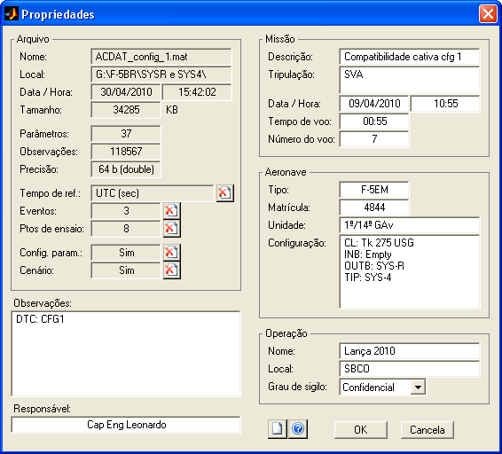

| Menu Arquivo |
|
Propriedades
O menu “Arquivo
► Propriedades” apresenta as
propriedades do arquivo atual.

Campos editáveis
Os campos em fundo branco são livremente editáveis pelo usuário.
É possível inserir informações sobre a missão, a aeronave e a operação, como no exemplo acima, além de um campo livre para observações.
Para limpar todos os campos editáveis, clique no botão e confirme.
Campos não editáveis
Nos demais campos são
apresentadas informações relativas ao arquivo mat, como:
- Nome e local do arquivo;
- Data e hora em que o arquivo foi salvo pela última vez;
- Tamanho do arquivo em bytes, KB ou MB;
- Número de parâmetros;
- Número de observações da matriz de dados;
- Precisão da matriz de dados (número de bits por elemento) ao salvar arquivo mat;
- Número de eventos;
- Número de pontos
de ensaio;
- Tempo de referência dos eventos e pontos de ensaio;
- Se a configuração de parâmetros para reprodução do voo está
cadastrada;
- Se o cenário para reprodução do voo está definido.
|
Variável |
Descrição |
|
reftime |
Nome do tempo
de referência dos eventos e pontos de ensaio |
|
events |
Dados dos
eventos |
|
testpts |
Definições dos
pontos de ensaio |
|
setup |
Configuração de
parâmetros para reprodução do voo |
|
scenario |
Cenário tático
para reprodução do voo |
As variáveis “reftime”, “events” e “testpts” são definidas pelas ferramentas “Editor de eventos” e “Editor de pontos de ensaio”.
As variáveis "setup" e "scenario" são definidas pela ferramenta "Reprodução do
voo".
|
Nota: Caso hajam
eventos ou pontos de ensaio definidos, não será possível excluir a
variável “reftime”. |
Para uma descrição detalhada das variáveis que conpõem o arquivo mat, veja a descrição da operação Salvar arquivo mat.
| |
Arquivo
temporário |
Impressão |
|